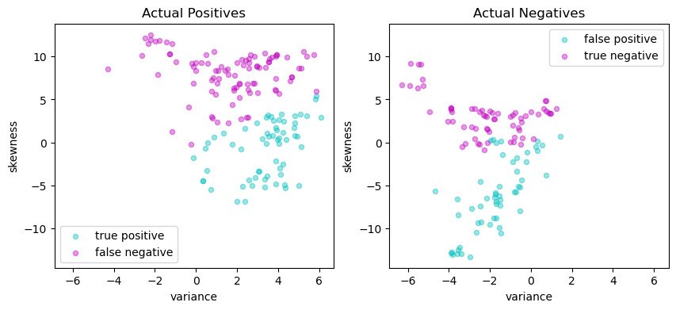
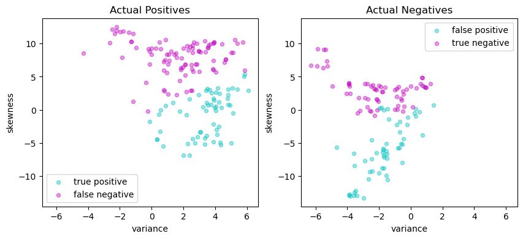

Support Vector Machines Revisited#
This notebook revisits the Support Vector Machines for Binary Classification notebook from Chapter 5, but this time in the context of conic optimization.
# install Pyomo and solvers
import sys
import os
SOLVER_CONIC = "mosek_direct"
if 'google.colab' in sys.modules:
!pip install idaes-pse --pre >/dev/null 2>/dev/null
!idaes get-extensions --to ./bin
os.environ['PATH'] += ':bin'
SOLVER_CONIC = "ipopt"
The Data Set#
The following data set contains data from a collection of known genuine and known counterfeit banknote specimens. The data includes four continuous statistical measures obtained from the wavelet transform of banknote images named “variance”, “skewness”, “curtosis”, and “entropy”, and a binary variable named “class” which is 0 if genuine and 1 if counterfeit.
https://archive.ics.uci.edu/ml/datasets/banknote+authentication
import matplotlib.pyplot as plt
import numpy as np
import pandas as pd
from sklearn.model_selection import train_test_split
# read data set
df = pd.read_csv("https://raw.githubusercontent.com/mobook/MO-book/main/datasets/data_banknote_authentication.txt", header=None)
df.columns = ["variance", "skewness", "curtosis", "entropy", "class"]
df.name = "Banknotes"
# create training and validation test sets
df_train, df_test = train_test_split(df, test_size=0.2)
# select training features
features = ["variance", "skewness"]
# separate into features and outputs
X_train = df_train[features]
y_train = 1 - 2 * df_train["class"]
# separate into features and outputs
X_test = df_test[features]
y_test = 1 - 2 * df_test["class"]
def scatter_labeled_data(X, y, labels=["+1", "-1"], colors=["g", "r"], **kwargs):
"""
Creates a scatter plot for labeled data with default labels and colors.
Parameters:
X : DataFrame
Feature matrix as a DataFrame.
y : Series
Target vector as a Series.
labels : list, optional
Labels for the positive and negative classes. Default is ["+1", "-1"].
colors : list, optional
Colors for the positive and negative classes. Default is ["g", "r"].
**kwargs : dict
Additional keyword arguments for the scatter plot.
Returns:
None
"""
# Prepend keyword arguments for all scatter plots
kw = {"x": 0, "y": 1, "kind": "scatter", "alpha": 0.4}
kw.update(kwargs)
# Ignore warnings from matplotlib scatter plot
import warnings
with warnings.catch_warnings():
warnings.filterwarnings("ignore")
kw["ax"] = X[y > 0].plot(**kw, c=colors[0], label=labels[0])
X[y < 0].plot(**kw, c=colors[1], label=labels[1])
# plot training and test sets in two axes
fig, ax = plt.subplots(1, 2, figsize=(10, 4))
scatter_labeled_data(X_train, y_train, labels = ["genuine", "counterfeit"], ax=ax[0], title="Training Set")
scatter_labeled_data(X_test, y_test, labels = ["genuine", "counterfeit"], ax=ax[1], title="Test Set")

Conic optimization model#
Primal formulation#
Following the development of Chapter 5, we again consider training a linear support vector machine using a training set with \(p\)-element feature vectors \(x_i\in\mathbb{R}^p\) ad classification labels, \(y_i = \pm 1\). A classifier is defined by two parameters: a weight vector \(w\in\mathbb{R}^p\) and a bias term \(b\in\mathbb{R}\)
The classifier is trained by developing and solving an optimization model for the values of \(w\) and \(b\). Introducing slack variables \(z_i\) for \(i=1, 2, \ldots, n\),
the task is to find \(w\in\mathbb{R}^p\) and \(b\)
The quadratic term \(\frac{1}{2} \|\bar{w}\|_2^2\) is included to regularize the solution for \(w\). The parameter \(c > 0\) provides for adjusting the tradeoff between reducing the number of misclassifications versus overfitting a training set. To simplify the presentation of the model, we introduce an \(n \times (p+1)\) matrix \(F\) constructed from the training data
Next we introduce a rotated quadratic cone defined as
For this application we introduce parameter \(r\sim u_1\), let \(1\sim u_2\) and \(w_k\sim u_{k+2}\). Then
With these additional components, the problem is now a conic optimization problem ready for implementation with the Pyomo Kernel Library and Mosek conic solver.
Like for the previous case, the Pyomo implementation is a “factory” function that returns a linear SVM.
The following cell presents a simple function to create a scatter plot for a labeled 2D set of features. The function assigns default labels and colors, and passes along other keyword arguments.
# import required libraries
import pandas as pd
import numpy as np
# Linear Support Vector Machine (SVM) class
class LinearSVM:
# Initialize the Linear SVM with weights and bias
def __init__(self, w, b):
"""
Args:
w (Pandas Series or dictionary): Weights of the SVM
b (float): Bias of the SVM
"""
self.w = pd.Series(w)
self.b = float(b)
# Call method to compute the decision function
def __call__(self, X):
"""
Args:
X (pandas.DataFrame): Input data
Returns:
numpy.array: Array of decision function values
"""
return np.sign(X.dot(self.w) + self.b)
# Representation method for the Linear SVM class
def __repr__(self):
"""
Returns:
str: String representation of the Linear SVM
"""
return f"LinearSvm(w = {self.w.to_dict()}, b = {self.b})"
import pyomo.kernel as pmo
def conicSvmFactory(X, y, c=1):
# create data matrix F
n, p = X.shape
F = np.array([y.iloc[i] * np.append(1, X.iloc[i, :].to_numpy()) for i in range(n)])
# create model block
m = pmo.block()
# decision variables
m.r = pmo.variable()
m.w = pmo.variable_list([pmo.variable() for i in range(p+1)])
m.z = pmo.variable_list([pmo.variable(lb=0) for i in range(n)])
# objective
m.primal = pmo.objective(expr = m.r + (c/n) * sum(m.z))
# constraints
m.qr = pmo.conic.rotated_quadratic.as_domain(m.r, 1, m.w)
m.d = pmo.constraint_list([pmo.constraint(body=m.z[i] + sum(F[i, j]*m.w[j] for j in range(p+1)), lb=1) for i in range(n)])
# solve
pmo.SolverFactory(SOLVER_CONIC).solve(m)
# return svm
b = m.w[0]()
w = pd.Series({k: m.w[j+1]() for j, k in enumerate(X.columns)})
return LinearSVM(w, b)
svm_v2 = conicSvmFactory(X_train, y_train, c=10)
print(svm_v2.w)
print(svm_v2.b)
variance 0.538113
skewness 0.156231
dtype: float64
-0.17435734099234473
def scatter_comparison(X, y, y_pred):
"""
Creates scatter plots comparing actual and predicted outcomes for both training and test sets.
Parameters:
X : DataFrame
Feature matrix as a DataFrame.
y : Series
Actual target vector as a Series.
y_pred : Series
Predicted target vector as a Series.
Returns:
None
"""
xmin, ymin = X.min()
xmax, ymax = X.max()
xlim = [xmin - 0.05 * (xmax - xmin), xmax + 0.05 * (xmax - xmin)]
ylim = [ymin - 0.05 * (ymax - ymin), ymax + 0.05 * (ymax - ymin)]
# Plot training and test sets
labels = ["genuine", "counterfeit"]
fig, ax = plt.subplots(1, 2, figsize=(10, 4))
scatter_labeled_data(X, y, labels, ["g", "r"], ax=ax[0], xlim=xlim, ylim=ylim, title="Actual")
scatter_labeled_data(X, y_pred, labels, ["c", "m"], ax=ax[1], xlim=xlim, ylim=ylim, title="Prediction")
# Plot actual positives and actual negatives
fig, ax = plt.subplots(1, 2, figsize=(10, 4))
scatter_labeled_data(X[y > 0], y_pred[y > 0], ["true positive", "false negative"],
["c", "m"], xlim=xlim, ylim=ylim, ax=ax[0], title="Actual Positives")
scatter_labeled_data(X[y < 0], y_pred[y < 0], ["false positive", "true negative"],
["c", "m"], xlim=xlim, ylim=ylim, ax=ax[1], title="Actual Negatives")
y_pred = svm_v2(X_test)
scatter_comparison(X_test, y_test, y_pred)
Performance metrics#
The following code cell has been was originally presented in Chapter 5.
def validate(y_true, y_pred, verbose=True):
"""
This function calculates and displays the sensitivity, precision, and Matthews correlation coefficient
(MCC) for a binary classifier based on its true labels (y_true) and predicted labels (y_pred).
Args:
y_true (array-like): A list or array containing the true labels of the samples.
y_pred (array-like): A list or array containing the predicted labels of the samples.
verbose (bool, optional): If True, the function prints and displays the calculated metrics and
confusion matrix. Defaults to True.
Returns:
float: The calculated Matthews correlation coefficient (MCC).
"""
# Calculate the elements of the confusion matrix
true_positives = sum((y_true > 0) & (y_pred > 0))
false_negatives = sum((y_true > 0) & (y_pred < 0))
false_positives = sum((y_true < 0) & (y_pred > 0))
true_negatives = sum((y_true < 0) & (y_pred < 0))
total = true_positives + true_negatives + false_positives + false_negatives
# Calculate the Matthews correlation coefficient (MCC)
mcc_numerator = (true_positives * true_negatives) - (false_positives * false_negatives)
mcc_denominator = np.sqrt((true_positives + false_positives) \
* (true_positives + false_negatives) \
* (true_negatives + false_positives) \
* (true_negatives + false_negatives))
mcc = mcc_numerator / mcc_denominator
if verbose:
print(f"Matthews correlation coefficient (MCC) = {mcc:0.3f}")
# report sensitivity and precision, and accuracy
sensitivity = true_positives / (true_positives + false_negatives)
precision = true_positives / (true_positives + false_positives)
accuracy = (true_positives + true_negatives) / total
print(f"Sensitivity = {100 * sensitivity: 0.1f}%")
print(f"Precision = {100 * precision: 0.1f}%")
print(f"Accuracy = {100 * accuracy: 0.1f}%")
# Display the binary confusion matrix
confusion_matrix = pd.DataFrame(
[[true_positives, false_negatives], [false_positives, true_negatives]],
index = ["Actual Positive", "Actual Negative"],
columns=["Predicted Positive", "Predicted Negative"])
display(confusion_matrix)
return mcc
def test(svm, X_test, y_test):
y_pred = svm(X_test)
print(svm, "\n")
validate(y_test, y_pred)
scatter_comparison(X_test, y_test, y_pred)
y_pred = svm_v2(X_test)
validate(y_test, y_pred)
Matthews correlation coefficient (MCC) = 0.807
Sensitivity = 92.9%
Precision = 90.6%
Accuracy = 90.5%
| Predicted Positive | Predicted Negative | |
|---|---|---|
| Actual Positive | 145 | 11 |
| Actual Negative | 15 | 104 |
0.8070093496995073
Dual formulation#
The following derivation of the dual formulation is an abbreviated version of that given in Chapter 5. A differentiable Lagrangian with dual factors \(\alpha_i \geq 0\) and \(\beta_i \geq 0\) for \(i = 1, \dots, n\), is given by
The necessary conditions for a saddle point are form of a standard quadratic optimization in \(n\) variables \(\alpha_i\) for \(i = 1, \dots, n\).
The symmetric \(n \times n\) Gram matrix is defined as
where each entry is dot product of two vectors \((y_i x_i), (y_j x_j) \in \mathbb{R}^{p+1}\). We can eliminates the need to compute and store the full Gram matrix \(G\) by introducing the \(n \times p\) matrix \(F\)
Then \(G = FF^\top\) which brings the \(p\) primal variables \(w = F^\top\alpha\) back into the computational problem. The optimization problem becomes
We introduce an additional decision variable \(r \geq 0\) to specify rotated quadratic cones. Then
The result is a conic optimization problem for the dual coefficients \(\alpha\) and auxiliary variables \(r\) and \(z\).
The solution to dual formulation provides an alternative expression for the resulting support vector machine. Let \({SV}\) represent the set of support vectors, which can be implemented as the set of indices for which \(\alpha_i > 0\). Then SVM can be expressed as either
or, more directly, as
The first formulation is a computationally efficient implementation of a linear SVM, and used in the following Pyomo implementation. The second formulation, however, provides additional insight into how an SVM works, and is the basis for important generalizations of SVM including the kernelized SVM discussed below.
The solution for the bias term \(b\) is obtained by considering the complementarity conditions on the dual variables. The slack variables \(z_i\) are zero if \(\beta_i > 0\) which is equivalent to \(\alpha_i < \frac{c}{n}\). If \(\alpha_i > 0\) then \(1 - y_i (w^\top x_i + b)\). Putting these facts together gives a formula for \(b\)
Pyomo implementation#
import pyomo.kernel as pmo
def conicDualSVMFactory(X, y, c=1):
n, p = X.shape
F_ = X.mul(y, axis=0).to_numpy()
y_ = y.to_numpy()
C = c / n
m = pmo.block()
# decision variables
m.r = pmo.variable()
m.a = pmo.variable_list([pmo.variable(lb=0, ub=C) for i in range(n)])
m.w = pmo.variable_list([pmo.variable() for i in range(p)])
# objective
m.o = pmo.objective(expr=m.r - sum(m.a))
# constraints
m.s = pmo.constraint(body=sum(y_[i] * m.a[i] for i in range(n)), rhs=0)
m.d = pmo.constraint_list([
pmo.constraint(body=sum(F_[i, j]*m.a[i] for i in range(n)) - m.w[j], rhs=0) for j in range(p)
])
m.q = pmo.conic.rotated_quadratic.as_domain(m.r, 1, m.w)
# solve
pmo.SolverFactory('mosek_direct').solve(m)
# get the support
S = [i for i in range(n) if (m.a[i]() > 0)]
# create and return linear SVM
w = pd.Series({k: m.w[j]() for j, k in enumerate(X.columns)})
a = pd.Series({k: m.a[i]() for i, k in enumerate(X.index)})
# Find alpha closest to the center of [0, c/n]
i = a.index[(a - C / 2).abs().argmin()]
b = y.loc[i] - X.loc[i, :].dot(w)
y_support = pd.Series([1 if m.a[i]() > 0 else -1 for i in range(n)], index=X.index)
#scatter(X, y_support, colors=['b', 'y'], labels=['Support Vector', ''], title="Support Vectors")
return LinearSVM(w, b)
svm_v3 = conicDualSVMFactory(X_train, y_train, c=10)
test(svm_v3, X_test, y_test)
LinearSvm(w = {'variance': 0.5656182473927917, 'skewness': 0.1646042124503589}, b = -0.2726196900769655)
Matthews correlation coefficient (MCC) = 0.815
Sensitivity = 91.7%
Precision = 92.3%
Accuracy = 90.9%
| Predicted Positive | Predicted Negative | |
|---|---|---|
| Actual Positive | 143 | 13 |
| Actual Negative | 12 | 107 |


Kernelized SVM#
Implementation#
To take advantage of the kernel trick, we assume an appropriate kernel \(K(x, z)\) has been identified, then replace all instances of \(\phi(x_i)^\top \phi(x)\) with the kernel. The “kernelized” SVM is then given by solution to
where
where the resulting classifier is given by
We define the \(n\times n\) positive symmetric semi-definite Gram matrix
We factor \(G = FF^\top\) where \(F\) has dimensions \(n \times q\) and where \(q\) is the rank of \(G\). This factorization is not unique. As demonstrated in the Python code below, one suitable factorization is the spectral factorization \(G = U\Lambda U^T\) where \(\Lambda\) is a \(q\times q\) diagonal matrix of non-zero eigenvalues, and \(U\) is an \(n\times q\) normal matrix such that \(U^\top U = I_q\). Then
Once this factorization is complete, the optimization problem for the kernelized SVM is the same as for the linear SVM in the dual formulation
The result is a conic optimization problem for the dual coefficients \(\alpha\) and auxiliary variables \(r\) and \(z\).
Summarizing, the essential difference between training the linear and kernelized SVM is the need to compute and factor the Gram matrix. The result will be a set of non-zero coefficients \(\alpha_i > 0\) the define a set of support vectors \(\mathcal{SV}\). The classifier is then given by
The following cell implements this model, then tests the resulting classifier for some well-known kernels commonly used in SVM applications.
import numpy as np
import pyomo.kernel as pmo
def kernelSVMFactory(X, y, c, tol=1e-8, kernel=lambda x, z: (x @ z)):
n, p = X.shape
# convert to numpy arrays for speed
X_ = X.to_numpy()
y_ = y.to_numpy()
C = c / n
# kernel matrix
G = [[y_[i] * y_[j] * kernel(X_[i, :], X_[j, :]) for j in range(n)] for i in range(n)]
# spectral factors for a positive semi-definite matrix
eigvals, V = np.linalg.eigh(G)
idx = (eigvals >= tol * max(eigvals))
F = V[:, idx] @ np.diag(np.sqrt(eigvals[idx]))
q = sum(idx)
# build model
m = pmo.block()
# decision variables
m.r = pmo.variable()
m.a = pmo.variable_list([pmo.variable(lb=0, ub=C) for i in range(n)])
m.z = pmo.variable_list([pmo.variable() for i in range(q)])
# objective
m.o = pmo.objective(expr=m.r - sum(m.a))
# constraints
m.s = pmo.constraint(body=sum(y_[i] * m.a[i] for i in range(n)), rhs=0)
m.d = pmo.constraint_list([pmo.constraint(body=sum(F[i, j]*m.a[i] for i in range(n)) - m.z[j], rhs=0) for j in range(q)])
m.q = pmo.conic.rotated_quadratic.as_domain(m.r, 1, m.z)
# solve
pmo.SolverFactory('mosek_direct').solve(m)
# get the support
SV = [i for i in range(n) if (m.a[i]() > 1e-3*C)]
# create and return linear SVM
a = np.array([m.a[i]() for i in range(n)])
# Find alpha closest to the center of [0, c/n]
i = np.abs(a - C / 2).argmin()
b = y_[i] - sum(a[j] * kernel(X_[j, :], X_[i, :]) for j in range(n))
# get indices of the support vectors
SV = [i for i in range(n) if (m.a[i]() > 1e-3)]
def kernelSVM(Z):
nz, pz = Z.shape
Z_ = Z.to_numpy()
y_pred = pd.Series([np.sign(sum(m.a[i]() * y_[i] * kernel(X_[i, :], Z_[j, :]) for i in SV)) for j in range(nz)], index=Z.index)
return y_pred
return kernelSVM
Linear kernel#
A linear kernel reduces the kernelized SVM to the previous case.
This is useful for verifying the calculation.
svm = kernelSVMFactory(X_train, y_train, c=10, kernel=lambda x, z: x @ z)
test(svm, X_test, y_test)
<function kernelSVMFactory.<locals>.kernelSVM at 0x7f9250dc44c0>
Matthews correlation coefficient (MCC) = 0.786
Sensitivity = 94.9%
Precision = 87.6%
Accuracy = 89.5%
| Predicted Positive | Predicted Negative | |
|---|---|---|
| Actual Positive | 148 | 8 |
| Actual Negative | 21 | 98 |


Radial basis function kernel#
A radial basis function kernal is given by
The radial basis function is commonly used as the default kernel in SVM applications.
rbf = lambda x, z: np.exp(-10 * np.linalg.norm(x - z)**2)
svm = kernelSVMFactory(X_train, y_train, c=10, kernel=rbf)
test(svm, X_test, y_test)
<function kernelSVMFactory.<locals>.kernelSVM at 0x7f9250d6b9d0>
Matthews correlation coefficient (MCC) = 0.912
Sensitivity = 94.9%
Precision = 97.4%
Accuracy = 95.6%
| Predicted Positive | Predicted Negative | |
|---|---|---|
| Actual Positive | 148 | 8 |
| Actual Negative | 4 | 115 |

Polynomial kernel#
poly = lambda x, z: (1 + (x @ z)) ** 3
svm = kernelSVMFactory(X_train, y_train, c=10, kernel=poly)
test(svm, X_test, y_test)
<function kernelSVMFactory.<locals>.kernelSVM at 0x7f921cff6040>
Matthews correlation coefficient (MCC) = -0.057
Sensitivity = 39.7%
Precision = 53.4%
Accuracy = 46.2%
| Predicted Positive | Predicted Negative | |
|---|---|---|
| Actual Positive | 62 | 94 |
| Actual Negative | 54 | 65 |
 

Bibliographic Notes#
The development of support vector machines is largely attributed to Vladimir Vapnik and colleagues at AT&T Bell Laboratories during the 1990’s. The seminal papers are highly readable and entry points to the literature.
Boser, B. E., Guyon, I. M., & Vapnik, V. N. (1992, July). A training algorithm for optimal margin classifiers. In Proceedings of the fifth annual workshop on Computational learning theory (pp. 144-152). https://dl.acm.org/doi/10.1145/130385.130401
Cortes, C., & Vapnik, V. (1995). Support-vector networks. Machine learning, 20(3), 273-297. https://link.springer.com/content/pdf/10.1007/bf00994018.pdf
Support vector machines are a widely used method for supervised machine learning and described in tutorial blog postings and trade journal articles. Representative examples include
Sachin, D. N. (2020). Support Vector Machines with Amazon Food Reviews https://medium.com/analytics-vidhya/support-vector-machines-with-amazon-food-reviews-9fe0428e09ef
Additional web resources are available at Wikipedia, CMU, and Oxford.